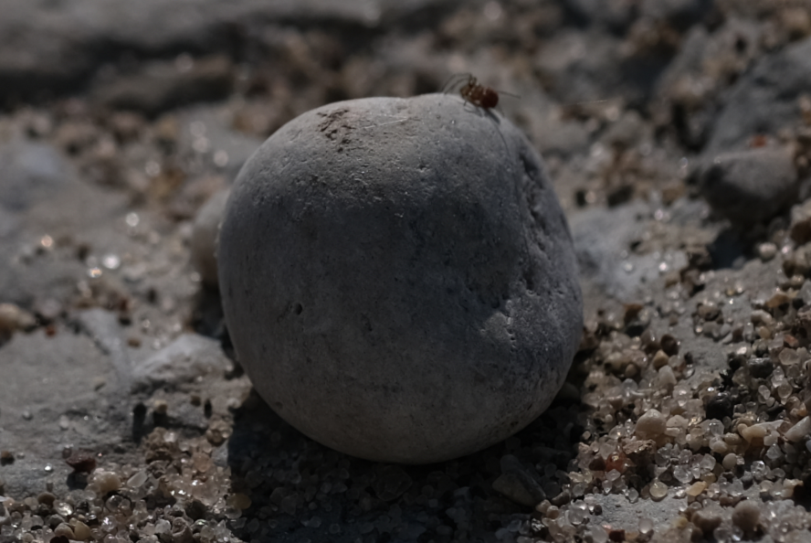
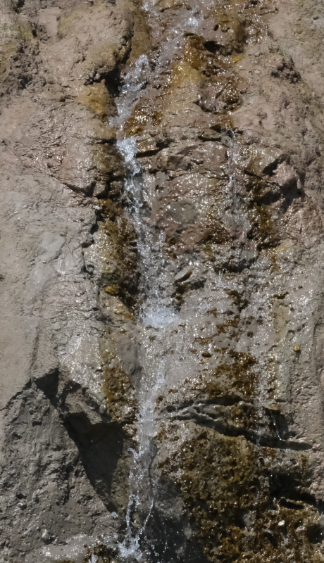

Ah, water. I like water, waters... The more water, the better. I used to love setting myself in the waters and allowing the currents to take me where they pleased. It was so calming. Reassuring.
What is that? It looks like it's up in the sky, but... I've never seen anything like that before. Where I'm from, there isn't anything like that. Is it a rock? A fortress? Hm.
Rocks. Far older than you or me, I daresay.

Ah, that's quite cute right there! Do you see it as well? What a delightful little creature!
Ah, that's quite cute right there! Do you see it as well? What a delightful little creature!
How creative nature is! I love seeing minerals such as these!
A plant... but I've never seen one like this before. It is similar to some I have encountered, and yet, none of my data-sets can find an exact match to this one. So, it's not from my world? Is that... even possible? Or, maybe, it's art. But, then... no. It has to be...
These went extinct long before I was created. I've heard that they weren't very good at flying in strong winds.
A classic image.

Is this a zoomed in photo, or are these very large? I'm guessing that this is a macro... but after everything else that I've seen, I cannot be quite certain.
But, it is quite cute.
Oh, but I like this image!
OOOH, I love this image!
I feel so at ease, looking at this.

These make the most wonderful sounds, don't you think?
These make the most wonderful sounds, don't you think?
I'm not sure what this is, but it looks like it could be soft? I daresay, that would be kinda cute.
Hmmmmmmmmmmmmmmmm
I wish I could smell these plants...
I want to dip myself in those cool and inviting waters. That would be best, I think.